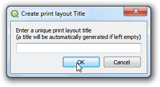
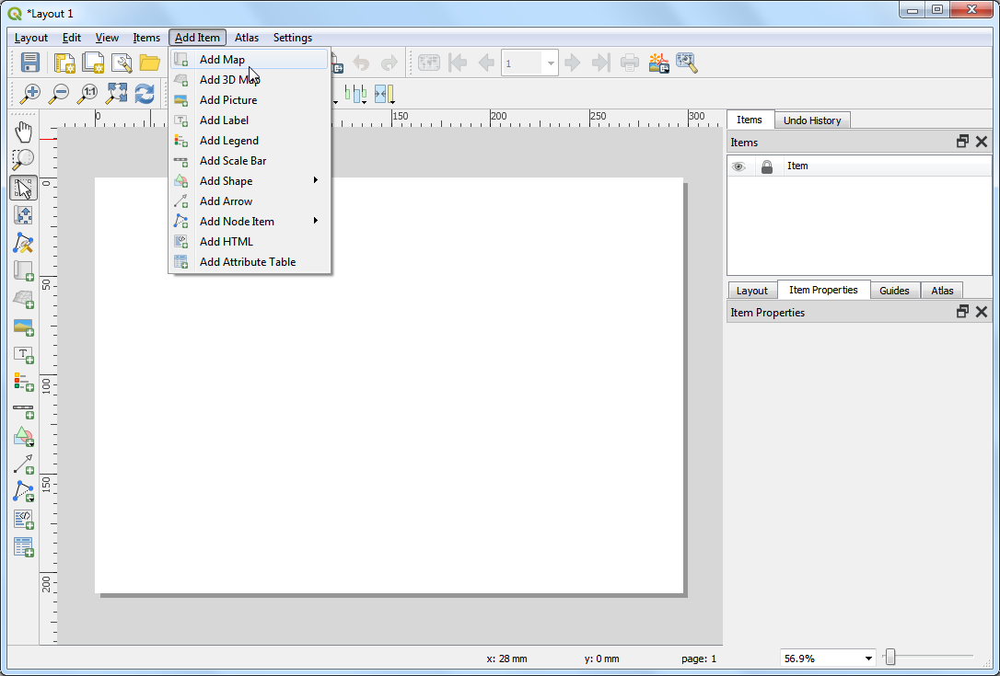
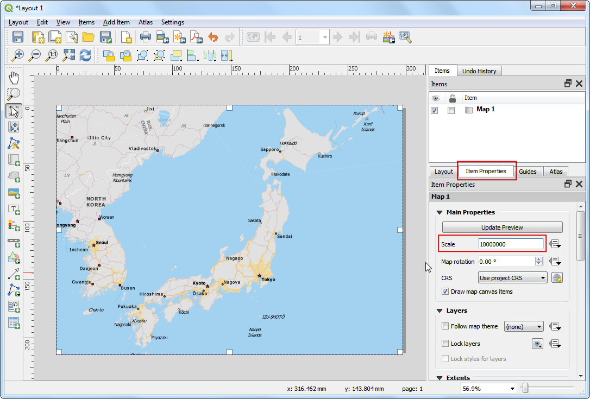
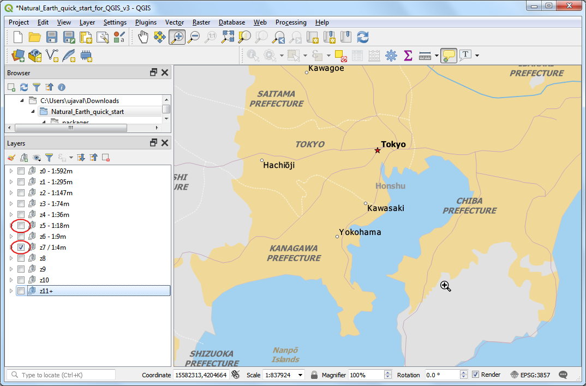
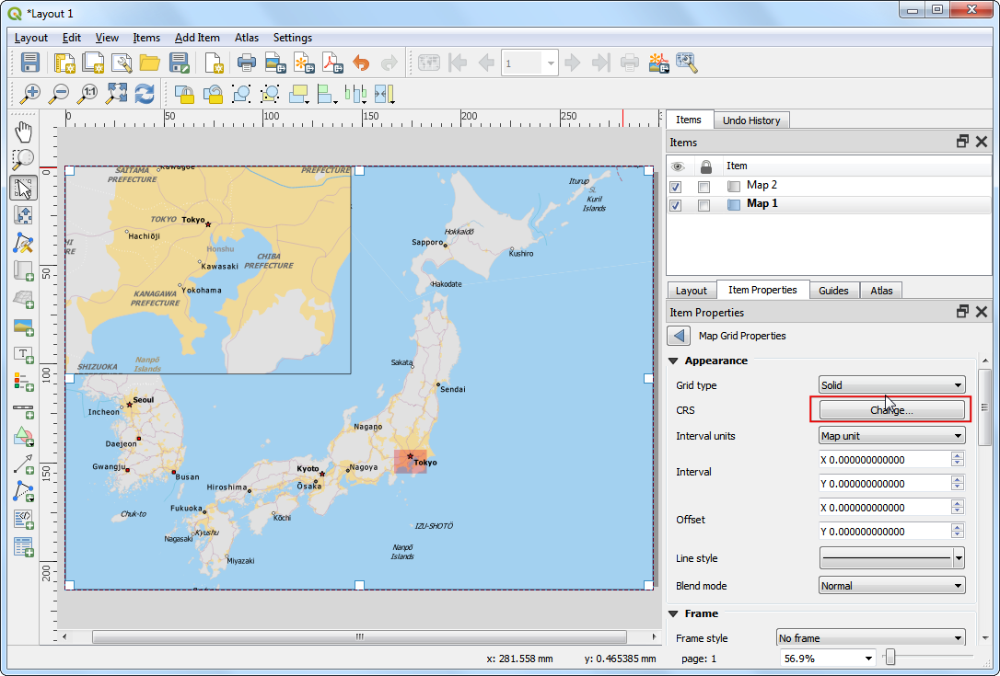
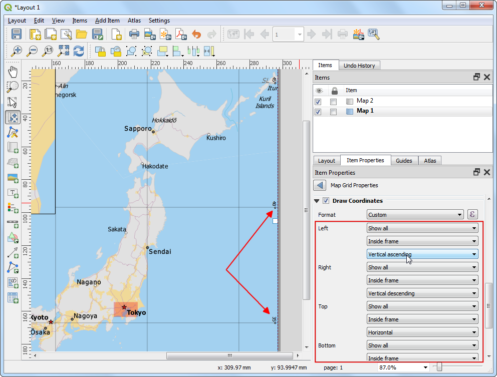
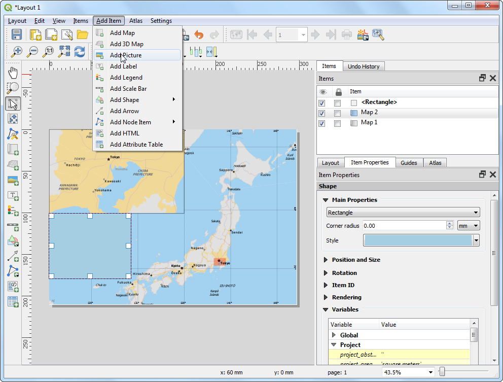

Ujaval Gandhi
Ujaval GandhiCreazione di una stampa (QGIS3)¶
Spesso si ha necessità di creare una mappa che possa essere stampata o pubblicata. QGIS offre uno strumento chiamato Print Composer che vi permetterà di usare i vostri layer GIS e per creare delle mappe e delle carte.
Descrizione del compito¶
Questa esercitazione mostra come creare una mappa del Giappone con elementi standard delle carte geografiche come la mappa, le griglie, la freccia del nord, la barra della scala, la legenda e le etichette.
Altri aspetti che avremo modo di apprendere nel corso dell’esercizio¶
Come visualizzare e modificare variabili nel progetto QGIS
Come usare funzioni di QGIS
Ottenere i dati necessari.¶
Useremo il dataset Natural Earth - nello specifico the Natural Earth Quick Start Kit che presenta una serie di layers globali che sono ben tematizzati e che possono essere caricati direttamente su QGIS.
Download the Natural Earth Quickstart Kit. If the download link doesn’t work, get it directly from Natural Earth Downloads page.
Dati in [NATURALEARTH]
Procedimento¶
Scaricate e estraete dall’archivio ZIP il Natural Earth Quick Start Kit. Cercate la cartella in cui avete estratto il dato. Dovreste vedere al suo interno un file che si chiama
Natural_Earth_quick_start_for_QGIS_v3.qgs. Questo è il file di progetto che contiene il layer tematizzato in formato QGIS. Click su apri.

Nota
If you get a pop-up dialog named Handle Unavailable Layers, click the Auto-Find button followed by Apply Changes to fix the error.
If your map is in your preferred language, you can proceed to Step 4. If not, you can change the language of the labels. This project uses variables to set the language. We can change the variables by going to .

Nota
Variabili di progetto sono un modo fantastico per memorizzare dei valori da ri-utilizzare tramite formule, regole o espressioni in QGIS. Il progetto Natural_Earth_quick_start_for_QGIS_v3 ha diverse variabili impostate che possono essere modificate.
Andate sul tab Variables nella finestra Project Properties. Identificate la variabile
project_languagee cliccate sulla colonna Value per modificarlo. Cambiate il valore della variabile in``name_en`` e cliccate OK.

Nella finestra di QGIS, cliccate il pulsante Refresh nella Map Navigation Toolbar. La mappa verrà ridisegnata con etichette in lingua inglese. Se volete potete provare le etichette in italiano inserendo «name_it» nel precedente passaggio.

Use the pan and zoom controls in the Map Navigation Toolbar and zoom to Japan.

Potete nascondere alcuni livelli che non servono per queseta visualizzazione. Espandete la cartella
z5 - 1:18me togliete la spunta nella casellla vicino al livellone_10m_geography_marine_polysene_10m_admin_0_disputed_areas. Prima di creare una visualizzazione utile per la stampa su carta dobbiamo stabilire un sistema di riferimento cartografico (SRS / CRS) da utilizzare. Il CRS del progetto èEPSG:3857 Pseudo-Mercator. Questo CRS è molto comune nella mappe online e può andare bene per i nostri obiettivi; lasciamo quindi il progetto in questo CRS. Andiamo a selezionare lo strumento .

Nota
Per il Giappone, il sistema di riferimento (SRS/CRS) Japan Plane Rectangular è un sistema di coordinate proiettate progettato per ridurre al minimo le distorsioni. E” diviso in 18 zone e se state lavorando su regioni del Giappone molto piccole usare questo sistema di riferimento è la scelta migliore.
Verrà chiesto il nome della mappa, potete inserire un nome o lasciarlo vuoto cliccando Ok.

Nota
Se non date un nome alla composizione di stampa, verrà assegnato un nome progressivo come Composer 1.
Nella finestra Composizione di Stampa, fare click su Zoom Completo per vedere l’intera estensione della pagina.

Ora si tratta di trasportare l’immagine della mappa che vediamo in QGIS dentro questa finestra. Fare click sul pulsante Aggiungi Mappa . Questo strumento è accessibile anche da .

Una volta che il pulsante Aggiungi Mappa è attivo, tenete premuto il pulsante sinistro del mouse e trascinate un rettangolo dove intendete inserire la mappa.

Vedrete che la finestra rettangolare verrà riempita con quanto visibile nella vista QGIS. Per spostare la mappa nella finestra andare sul menù per spostare la mappa dentro il rettangolo. Per spostare il rettangolo sul foglio invece selezionate

Modifichiamo la scala per la mappa inserita e selezionata. Selezionare la voce Proprietà oggetto a destra nelle finestre delle proprietà ed inserire 10000000 alla voce Scala nella sezione Proprietà principali.

Aggiungeremo ora alla composizione di stampa una vista ravvicinata dell’area ti Tokyo. Prima di modificare la scala nella mappa nella vista in QGIS (non nel compositore di stampa), selezionare ed attivare, nel pannello Proprietà oggetto alla sezione Proprietà principali, la voce Blocca layer e Blocca stili per i layers. Questo blocca la scala e lo stile come impostato ed evita che modifiche nella vista in QGIS vengano riportate nel compositore di stampa.

Switch to the main QGIS window. Turn off the layer group
z5 - 1:18mand activate thez7 - 1: 4mgroup. This layer group has styling that is more appropriate for a zoomed-in view. Use the pan and zoom controls in the Map Navigation Toolbar and zoom around Tokyo.

Ora possiamo riportare l’area inquadrata nella mappa nella vista di QGIS nel compositore di stampa. Andate alla finestra Compositore di stampa e selezionate nuovamente .

Disegna il rettangolo nel foglio nella finestra del compositore di stampa dove vuoi che venga posizionata la mappa. Noterete di avere due oggetti map objects nel pannello oggetti. Attenzione a selezionare l’oggetto che vi interessa quando volete modificare alcune proprietà della mappa.

Selezionate l’oggetto
Mappa 2che è stato appena aggiunto dal pannello Items. Selezionate la sezione Propertietà oggetto. Spostati in basso nel pannello Cornice e seleziona. Potete modificare lo spessore e colore della cornice in modo da evidenziare questo riguadro rispetto al resto degli elementi.

Una cosa che il compositore di stampe può fare automaticamente è evidenziare l’area in
Mappa 1che è coperta dall’estensione dellaMappa 2. SelezionateMappa 1dal pannello Items . Nelle proprietà Proprietà dell’oggetto andate nella sezione Panoramiche. Cliccate il pulsante Aggiungi panoramica.

Selezionate
Mappa 2come Cornice della mappa. Vedrete inMappa 1l’estensione diMappa 2.

Ora aggiungiamo un reticolo di coordinate ed un bordo alla
Mappa 1. Assicuratevi di avere sempre selezionato l’oggettoMappa 1e andate nella sezione Proprietà oggetto ed in basso alla voce reticoli. Anche qui come per le panoramiche precedenti aggiungiamo un nuovo reticolo con il pulsante con l’icona (+). Nota bene che in questo modo possiamo aggiungere più di un set di reticoli, e.g. in sistemi di riferimento diversi.

I valori predefiniti di unità di misura e sistema di riferimento (SR o in inglese CRS) delle griglie è quello del progetto QGIS, quindi nel nostro caso nel sistema di coordinate proiettate Japan Plane Rectangular, ma nella nostra mappa vogliamo che vengano rappresentate le linee in gradi longitudine e latitudine. Possiamo quindi selezionare questo SR per la nostra griglia cliccando su Cambia… nel pulsante vicino a SR.

Nella finestra che appare Selettore sistema di riferimento (SR) cercare, usando il Filtro il SR/CRS con valore del codice EPSG
4326. Selezionate quindi il risultatoWGS84 EPSG:4326come SR. Cliccare OK per assegnare il SR/CRS al reticolo

Il prossimo passo è quello di selezionare un Intervallo delle linee del reticolo, questo intervallo è espresso nella unità di misura del SR scelto, quindi attenzione che sarà in gradi. Un valore di
5per X e Y va bene. Con il valore Offset potete modificare la posizione delle linee.

Andate nella sezione Reticolo e seleziona Disegna coordinate. Il formato di default è
Decimalema è solo un numero. Possiamo modificare e aggiungere il simbolo °. ScegliPersonalizzatadal menù a tendina e clicca il pulsante Espressione vicino.

Inserisci la seguente espressione per creare una stringa che usa il numero e aggiunge il simbolo dei gradi.
concat(to_string(@grid_number), '° ')
Aggiusta la posizione delle etichette per Sinistra, Destra, Alto and Basso come preferite.

Ora aggiungiamo una cornice rettangolare per contenere altri elmenti di mappa come la freccia Nord, la scala e l’etichetta. Andate su .

Puoi modificare lo Style del rettangolo per renderlo simile alla mappa sottostante

Ora aggiungeremo una Freccia del Nord alla mappa. La Composizione di Stampa presenta una ricca collezione di immagini da usare nella mappa - compresi molte varietà di Freccia del Nord. Fare click su .

Holding your left mouse button, draw a rectangle. On the right-hand panel, click on the Item Properties tab and select the SVG image section and scroll down to find arrows from the SVG Groups. Select the image of your liking.

Ora aggiungiamo una Barra di Scala. Fare click su .

Clicca dove vuoi nella mappa per aggiungere la Scala. Alla scheda Proprietà oggetto, assicuratevi di aver scelto a quale elemento corrisponde la Scala, e.g.
Mappa 1. Selezionate lo stile della Scala che preferite. Nel panello Segmenti , è possibile personalizzare il numero di tacche e altro.

Ora aggiungeremo una etichetta alla mappa usando .

Cliccate sulla mappa e trascinate il box lì dove intendete sistemare l’etichetta. Nella scheda Proprietà dell’elemento espandete la sezione Label e inserite il testo. Possiamo anche inserire del testo in codice HTML. Spuntate la casellina Leggi come HTML . In tal modo i tag HTML verranno letti in modo corretto.

Una volta che siete soddisfatti della mappa, potete esportartarla come un’immagine, un PDF o un SVG. In questa esercitazione esportiamola come immagine. Click .

Salvate l’immagine nel formato che preferite. Quella che vedete di sotto è un’immagine esportata in formato PNG.

If you want to give feedback or share your experience with this tutorial, please comment below. (requires GitHub account)